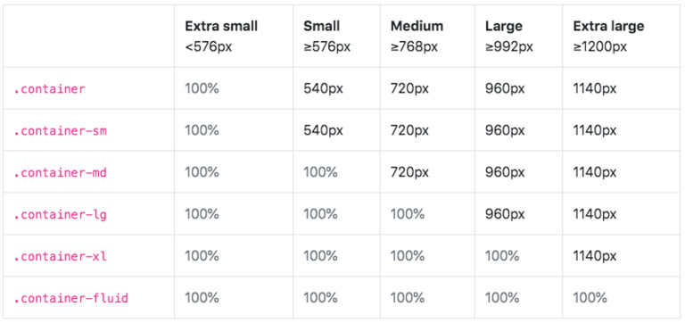

Bootstrap es una biblioteca multiplataforma o conjunto de herramientas de código abierto para diseño de sitios y aplicaciones web. Contiene plantillas de diseño con tipografía, formularios, botones, cuadros, menús de navegación y otros elementos de diseño basado en HTML y CSS, así como extensiones de JavaScript adicionales. A diferencia de muchos frameworks web, solo se ocupa del desarrollo front-end.
Bootstrap tiene un soporte relativamente incompleto para HTML5 y CSS3, pero es compatible con la mayoría de los navegadores web. La información básica de compatibilidad de sitios web o aplicaciones está disponible para todos los dispositivos y navegadores. Existe un concepto de compatibilidad parcial que hace disponible la información básica de un sitio web para todos los dispositivos y navegadores. Por ejemplo, las propiedades introducidas en CSS3 para las esquinas redondeadas, gradientes y sombras son usadas por Bootstrap a pesar de la falta de soporte de navegadores antiguos. Esto extiende la funcionalidad de la herramienta, pero no es requerida para su uso. Desde la versión 2.0 también soporta diseños web adaptables. Esto significa que el diseño gráfico de la página se ajusta dinámicamente, tomando en cuenta las características del dispositivo usado (Computadoras, tabletas, teléfonos móviles). Bootstrap es de código abierto y está disponible en GitHub. Los desarrolladores están motivados a participar en el proyecto y a hacer sus propias contribuciones a la plataforma.
Bootstrap es modular y consiste esencialmente en una serie de hojas de estilo LESS que implementan la variedad de componentes de la herramienta. Una hoja de estilo llamada bootstrap.less incluye los componentes de las hojas de estilo. Los desarrolladores pueden adaptar el mismo archivo de Bootstrap, seleccionando los componentes que deseen usar en su proyecto. Los ajustes son posibles en una medida limitada a través de una hoja de estilo de configuración central. Los cambios más profundos son posibles mediante las declaraciones LESS. El uso del lenguaje de hojas de estilo LESS permite el uso de variables, funciones y operadores, selectores anidados, así como clases mixin. Desde la versión 2.0, la configuración de Bootstrap también tiene una opción especial de "Personalizar" en la documentación. Por otra parte, los desarrolladores eligen en un formulario los componentes y ajustes deseados, y de ser necesario, los valores de varias opciones a sus necesidades. El paquete consecuentemente generado ya incluye la hoja de estilo CSS pre-compilada.
Bootstrap viene con una disposición de cuadrilla estándar de 940 píxeles de ancho. Alternativamente, el desarrollador puede usar un diseño de ancho-variable. Para ambos casos, la herramienta tiene cuatro variaciones para hacer uso de distintas resoluciones y tipos de dispositivos: teléfonos móviles, formato de retrato y paisaje, tabletas y computadoras con baja y alta resolución (pantalla ancha). Esto ajusta el ancho de las columnas automáticamente.
Bootstrap proporciona un conjunto de hojas de estilo que proveen definiciones básicas de estilo para todos los componentes de HTML. Esto otorga una uniformidad al navegador y al sistema de anchura, da una apariencia moderna para el formateo de los elementos de texto, tablas y formularios.
Además de los elementos regulares de HTML, Bootstrap contiene otra interfaz de elementos comúnmente usados. Ésta incluye botones con características avanzadas (e.g grupo de botones o botones con opción de menú desplegable, listas de navegación, etiquetas horizontales y verticales, ruta de navegación, paginación, etc.), etiquetas, capacidades avanzadas de miniaturas tipográficas, formatos para mensajes de alerta y barras de progreso. Estos son unos ejemplos de los botones que ofrece:
Los componentes de JavaScript para Bootstrap están basados en la librería jQuery de JavaScript. Los plug-ins se encuentran en la herramienta de plug-in de jQuery. Proveen elementos adicionales de interfaz de usuario como diálogos, tooltips y carruseles. También extienden la funcionalidad de algunos elementos de interfaz existentes, incluyendo por ejemplo una función de auto-completar para campos de entrada (input). La versión 2.0 soporta los siguientes plug-ins de JavaScript: Modal, Dropdown, Scrollspy, Tab, Tooltip, Popover, Alert, Button, Collapse, Carousel y Typeahead. Una implementación de Bootstrap usando el Dojo toolkit también está disponible. Es llamada Dojo Bootstrap y es un puerto de los plug-ins de Twitter Bootstrap. Usa el código Dojo al 100% y tiene soporte para AMD (Asynchronous Module Definition).
Puedes cosultar la documentación oficial de Bootstrap haciendo click aquí.